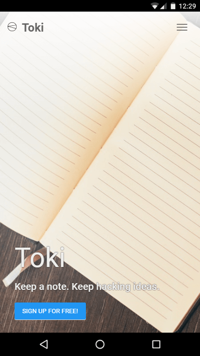
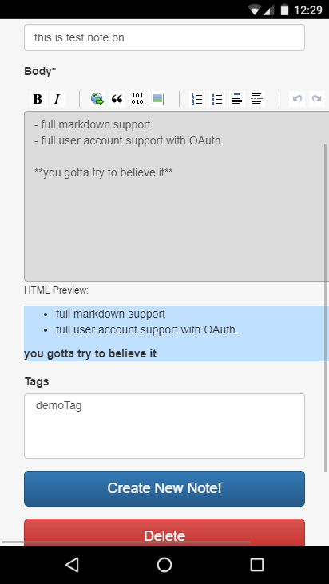
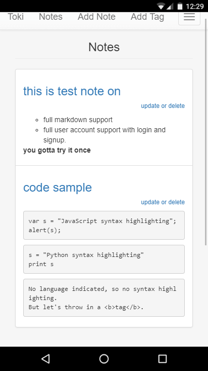
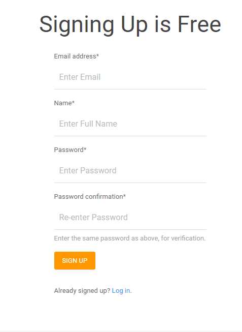

toki-keep-a-note
A simple note taking app made with Django. http://toki1.pythonanywhere.com/
Toki is a simple note taking Django project. It was developed to act as a Hands-on and to increase my experience with a MVC framework(MTV as in the case of Django).
I was interested in Django from the first time I searched about and after a little investigation I choose Django as the base for this project.
  
Features of Toki - keep a Note
- customize notes using the markdown editor.You dont need to know markdown, the editor will help you.
- You can Rename, Save, Update, Delete notes.
- support for code blocks and highlighting
- Fully responsive. use any device and always find the best layout.
Things I like about Django.
- Lots and lots of quality packages
- Full featured web framework
- Great community support and excellent documentation
- Really good ORM. It was really easy to work with DB.
- You can very quickly make a functional web app when you want to test your ideas.
Things I Learned
- Working with a MVC or you can say MTV.
- By doing this project I came to know how Django works and what powers does it has.
- integrating differnt packages into a single project
- Database operations on a RDBMS
- hosting and configuring the project on pythonanwhere.com
Resources/packages used
- django-crispy-forms: it makes your forms way more beautiful or I should say crispy.
- virtualenv: its a no-brainer.
- django-pagedown: provides easy editor for markdown input.
- many other packages are used, for them do check the requirement file.link:
How to run the project locally
Download the zip or Clone this repository:
git clone https://github.com/shubhamnishad97/toki-keep-a-note.git
Install the dependencies by simply executing:
pip install -r requirements.txt
Run this command to start the app:
python manage.py runserver
Visit 127.0.0.1:8000 on your web browser and don’t forget to give me some feedback.
Screenshots
